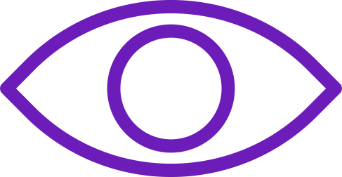

The Autonomics Research Centre [ARC] is a para-academic media collective.
As a program of study, ARC remains protean. It is a practice of cross-pollination.

Initialising
█
The Autonomics Research Centre [ARC] is a para-academic media collective.
As a program of study, ARC remains protean. It is a practice of cross-pollination.